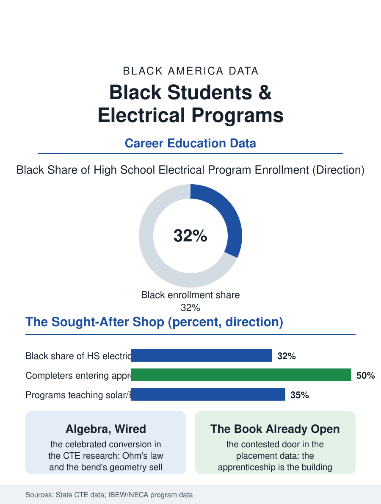

Black Education
Algebra, Wired: Black Students and Electrical Programs
The circuit made physical, the code as the text, and algebra sold at last by the light bulb. The electrical program file.

The electrical program teaches the trade that powers the others: the circuit, the conduit, and the code, in the CTE shop whose graduates enter the apprenticeship competitions of the most sought-after trade in the building, with the mathematics file's algebra finding its most motivated students at the panel. This article reads the electrical program file.
The Panel as the Classroom
The curriculum's core is the circuit made physical: the board's wall of panels where the student wires the switch and the three-way and the service entrance against the code's articles, the fault found by the meter's logic in the pattern of the HVAC lab's diagnosis, with the safety file as the trade's first and last subject, the lockout's ritual taught as the craft's religion in a shop where the error's tuition is the body's. The National Electrical Code is the program's text as the plumbing code is its sibling shop's, the student's fluency in its articles being the apprenticeship examination's known content, so that the program's completers arrive at the competition with the book already open in their hands. The mathematics is the file's celebrated conversion, the Ohm's law and the conduit's bends computing the algebra the general classroom could not sell, in the construction file's pattern of the abstraction made load-bearing. The motor control's logic, the relay's and the sensor's choreography that runs the modern building's machinery, is the program's advanced country, where the trade crosses into the automation file and the student's diagram-reading becomes the plant's troubleshooting, the highest-paid of the journeyman's arts and the one the industrial employers bid for by name. The program's graduates in the utility file, the line and the substation apprenticeships of the power companies, take the school's credential into the trade's most pensioned tier, a destination the counselors of the strong programs name in the first semester as the class's summit.
The Competition's Gate
The apprenticeship above the program is the building trades' most contested door, the union programs' aptitude lists and the open shops' hiring both reading the school completer's file with the preference the articulation agreements formalize in the strong districts, and the program's placement data are accordingly the CTE file's showpiece where the partnership is real. The solar and the storage and the vehicle charging files are the curriculum's new chapters, the trade's own frontier entering the school lab on the industry's donated equipment in the pattern of the automotive file's, with the districts' capacity to teach the frontier being, as there, the equity variable in formation. The instructor's recruitment is the program's standing fragility as in the sibling shops, the journeyman's wage against the teacher's being an arithmetic the districts solve with the trade's elders and its injured, whose judgment the classroom multiplies, and whose loss closes the lab more certainly than any budget line, the panel's wall going dark in the same semester the name leaves the door.
The Current's Keepers
The electrical file closes on the trade's position in the building's family, because the electrician is the systems' final authority, the panel's schedule being the building's constitution and the trade's license its ratification, a standing the program teaches as the craft's dignity in the pattern of the other shops. The bureau of the file is the multimeter's display. The association counts the program completers each year, the apprenticeship lists recording their names in the spring. The file's last entry is the circuit's first energizing at the lab's wall, the lamp lighting on the student's own wiring under the instructor's hand at the breaker, the moment the abstraction becomes the light by which the rest of the building works, which is the trade's whole argument delivered at the scale of one bulb, correctly wired. The conduit's bend, sprung a degree off and corrected by feel, is the program's signature exercise: the mathematics in the hands, judged by the wall. The lamp's light at the first energizing is the class's shared held breath, released together, a small ceremony the instructors allow themselves without comment. The breath returns as the room's applause finds its manners, the instructor's hand already moving to the next panel and the next student's circuit. The record holds in the students' hands.
More in Black Education
Black Educational Attainment: High School Parity, the College Gap
About 89 percent of Black adults hold a high school diploma and one in four holds a bachelor's degree or higher — the attainment ladder, the college completion gap, and the generational trend.
Historically Black Colleges and Universities: Enrollment and Degrees
More than 100 HBCUs enroll roughly 290,000 students and award about one in six Black bachelor's degrees — an outsized share from a small sector. The federal education data.
Black College Enrollment: 2.4 Million Students
About 2.4 million Black students are enrolled in American colleges — nearly two-thirds of them women. The NCES enrollment data by sector, level, and trend.
Source: State career and technical education data; National Electrical Contractors Association and IBEW training program data.